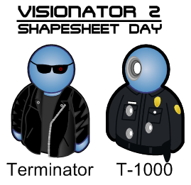

Архив новостей за 2009 год
Облачно, возможны осадки в виде Visio-объектов
11.12.2009
В Visio есть всего два объекта типа облако, что досадно. Соответственно в Интернете все схемы имеют одинаковые облака. Мне это надоело и я нарисовал 50 разных облачков.
50 облаков (vss).
Висячая пунктуация
19.11.2009
Давным-давно я прочитал в книге «Ководство» Артемия Лебедева, что есть такая штука, как висячая пунктуация. Также в книге было написано, что программы для верстки текста знают о ней и спокойно её реализуют.
Собственно прочитал, да забыл. А тут начал экспериментировать со сносками, вернее их номерами, и пришел к выводу, что все-таки висячую пунктуацию можно реализовать в Ворде. Придумал 4 решения. Три из них реализовал. Итак, висячую пунктуацию в Ворде сделать можно тремя способами:Ководство. Висячая пунктуация.
- Первый и самый очевидный — сдвинуть абзац на толщину символа, а строку с висячей пунктуацией не сдвигать. Долго, мучительно, но работает.
- Второй способ тоже очевидный — сдвинуть площадку нужного символа на 4 pt. и все.
- И третий, самый простой и элегантный (на мой взгляд, конечно) — сдвиг площадки глифов (в шрифтовом редакторе) и сохранение их под новыми глифами.
Пример висячей пунктуации из Ворда. (PDF, 146 КБ)
Про мастерство и безответную любовь
Чтобы стать мастером надо три вещи: любить то, что делаешь; фанатизм к тому, что делаешь; делать это лучше других. Правда тут есть один ньюанс — любовь к программе — дело неблагодарное (и поначалу безответное), но если ты фанат своего дела, то потихоньку это начнет приносить свои плоды. Поначалу ты с программой на «Вы», потом на «вы», потом на «ты», и наконец на «мы». А когда ты с программой на «мы», то тебе откроется «программная интуиция». О ней я писал 19.10.2007.
Юбилей
На этой неделе моему сайту исполнилось семь лет. Мой сайт не стал украшением блогосферы, но надеюсь стал маленькой крупицей знаний на бескрайних просторах интернета.
Опять же, скоро новый год и надо подводить итоги году уходящему. Это год стал для меня богатым на различные «открытия», я стал немного разбираться в типографике, в шрифтах, в вёрстке и в русском языке. :) За что я благодарен таким авторам как Рудер, Мильчин, Кудрявцев, Феличи, Робин Уильямс (не актер), Кричевский, чьи книги открыли для меня типографику.
Редизайн схем
29.10.2009
За последний год я, на работе, начал осваивать такую задачу, как редизайн схем. Скажем так, не часто, но инженерам трудно бывает грамотно сформировать схему с точки зрения дизайна, эстетики, логики. То есть схема получается или громоздкая, или нечитаемая. Вот как раз такие задачки мне и «подкидывают». Собственно что из этого получилось я и представляю. Получилось что-то вроде порфолио. :-)
Схемы Visio (редизайн).
Битва за байты. Часть 1
28.08.2009
Первая часть видеоурока по сжатию PDF. Как из 1100 КБ сделать 129 КБ. Сотрудникам Студии Артемия Лебедева на заметку. :-)Video PDF1.swf (rapidshare). 36,4 МБ.
Свободная поэзия
18.08.2009
Давно не добавлял картинок на страницу работ. Исправляюсь.
NVidia Quadro logo.
2 года – полет нормальный
26.07.2009
Два года назад я прикупил себе комп и недавно он начал выключаться. Проблема оказалась очень простой, высохла термопаста на процессоре. Однако выбор термопасты затянулся. Я прочитал много обзоров и лучшым термоинтерфейсом оказался... (барабанная дробь) жидкий металл на основе галия и индия.
Купить данный жидкий металл было полдела. Оставалось еще применить сиё творение на практике.
Инсталяция термоинтерфейса напоминает хирургическую операцию. Но результат налицо. В режиме простоя Т=34 С, в режиме стресса 63 С. Что очень напоминает результаты тестов. Данный термоинтерфейс выигрывает у лучших термопаст 4–5 С.
Сoollaboratory Liquid Pro и Liquid MetalPad – жидкий металл в роли термопасты.
No Print
17.07.2009
Когда-то я высказывал мнение о том, что неплохо бы в Visio сделать ячейку для страницы No Print. Однако я нашел решение. Если в ShapeSheet'е страницы установить «0» в ячейках PageWidth и PageHeight, то в этом случае страница при печати выводится не будет. Акробат её также пропускает.
Про схемы
Очень часто я вижу схемы сделанные из стандартных форм Visio. Они ужасны.
Однако тут можно возразить, что данные фигуры являются векторными! А так ли нужна эта векторность, когда схема вряд ли когда либо будет распечатана в формате больше, чем А3. Тогда и можно использовать растровые значки (не люблю слово иконки). :-)
Итак, что делаем? Лезем на сайт растровых (но очень качественных) значков, выбираем 256х256 значки, если есть Photoshop, плагином Alien Skin Blow Up увеличиваем до 1024х1024 и спокойно используем как аналог вектору. Поверьте, я печатал такую фигуру на А3 (одну на весь лист!) и не было видно никакой пикселизации.
Опять же, такие растровые значки гораздо лучше смотряться. Пусть даже значки из ОС Vista. Зато нашел за 5 минут. За 10 минут можно найти такой же пресет другого стиля.
Hardware Icons by VisualPharm [EN] (коммерческое использование также разрешено, см. сайт)
Еще 5 минут спустя.
P.S. Не забывайте что PNG вариант значков всегда идет с прозрачностью, что есть плюс.
Триумф знаний
30.06.2009
Я наконец-то получил третий «красный» диплом. Вообще-то это четвертый мой диплом, но третий «красный».
Итак, представляю список моих достижений в сфере образования:
- Среднее профессионально-техническое училище № 22. Квалификация — радиомонтажник 4-го разряда. Диплом с отличием.
- Московский заочный приборостроительных техникум. Квалификация — техник по специальности вычислительные машины, комплексы, системы и сети.
- Московский государственный вечерний металлургический институт. Квалификация — инженер по специальности Автоматизация технологических процессов и производств. Диплом с отличием.
- Московский институт предпринимательства и права. Квалификация — юрист по специальности Юриспруденция. Диплом с отличием.
Microsoft Office 2010 (Видеоотчет)
03.06.2009Смотрим.
Коточел
02.06.2009
Продолжаем тему супергероев.
Microsoft Office 2010 (Technical preview)
02.06.2009
Ура, я наконец-то достал Visio 14, хоть и technical preview (build 4006.1010). Ждите завтра первых впечатлений.
VisioGuy
01.06.2009
Этот человек несет знания туда, куда не вступала нога программиста, за что ему большая благодарность. Придумал много полезняшек по Visio.
Сайт VisioGuy [EN]
H`asta la vista baby
28.05.2009
«Железный» Арни не нуждается в каком-либо представлении.

Abe Sapien
20.05.2009
Напарник Хелбоя — Abe Sapien
Hellboy
11.05.2009
Продолжаем тему супергероев. На сей раз это Хелбой.
Трафарет для фотостудии
20.03.2009
Когда-то давно сделал трафареты для одной фотостудии. Проект не коммерческий; решил поделиться с общественностью.
Скачать:
Спецификация
Как сделать шаблон спецификации с нуля. Видеоверсия.
Вообще, такие практические видеоуроки крайне полезны. Вы не только видите всевозможные ньюансы, но и видите сам процесс. Что в сто раз эффективнее картинки или простого текста.
Но будут и статьи. Вместе с видеоуроками. Вообще сейчас план такой — полностью сформировать проект по ГОСТ 34, т. к. сейчас он мне ближе всего. :-)
Если у вас есть идеи по созданию шаблонов по каким-то другим ГОСТам, пишите, разберем.
Скачать:SWF (видеоверсия)
Анонс
Есть программа Adobe Acrobat. Для преобразования чего угодно в формат PDF. Задача: сделать минимально возможный размер файла.
Как это сделать мы скоро обсудим.
Т. к. мне стала доступна эта книга, то скоро она (в электронном варианте) будет доступна и вам. Только тц-ц-ц. Это секрет. :-)
Пара юбилеев
14.02.2009
Выложил тридцатую статью по Visio. Статья 30. Про шаблоны
Также доступна для скачивания пятая, опять же юбилейная, статья по Ворду.
Скачать:
SWF (видеоверсия)
FLUKE
29.01.2009
Думаю многие, кто имеет отношение к телекоммуникациям, видели отчеты по проверке связи оптики или меди. Примерно такие, как на картинке ниже.
Задача была такова, что мне надо было сделать данный файл в Ворде. Что я и сделал.
Для чего, собственно я это сделал? Чисто в экспериментальных целях. Бывает, попадается какой-нибудь элемент и ты задумываешься, как это сделать в Word (Excel, Visio, Corel, нужное подчеркнуть), и чтобы разобраться, я его просто сделал.
Скачать:
Скриншоты Office 2009 Alpha
22.01.2009
Майкрософт разослала избранным тестерам свою новую версию офисного пакета. Пока «альфы» нет ни на рапиде, ни в ослике. Нигде нет. Хотя получили тестеры Office 2009 еще неделю назад. Короче, вопиющее хамство. :-)
Нам остается довольствоваться скриншотами.
Сайт TheVista. Office 14 alpha
BMW, Volvo, Aston Martin
7.01.2009
BMW выложила векторный каталог всех моделей с 1928 года по настоящее время.
BMW_models_since_1928.pdf
На сайте Volvo можно скачать брошюры к нынешним моделям с векторными моделями.Брошюра Volvo XC60
Даже на линейку Aston Martin можно найти описания с векторными моделями.Aston_Martin_Guide_2006.pdf
Архив новостей: 2009 2008 2007 2006 2005 2004Автор: Ничков Алексей (Digitall)